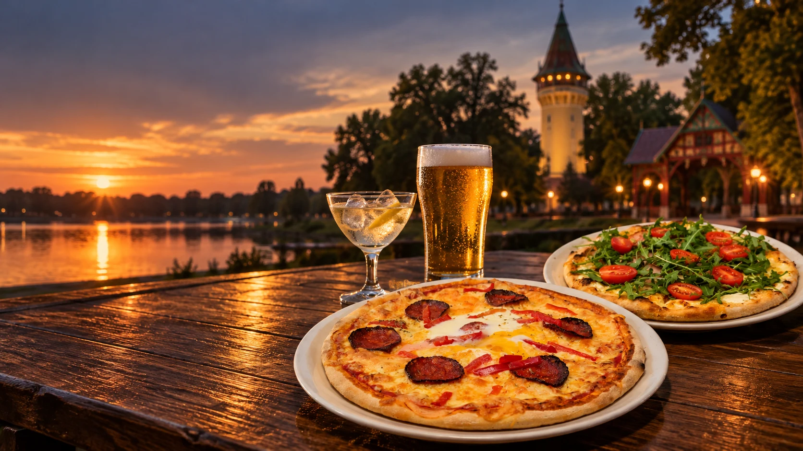
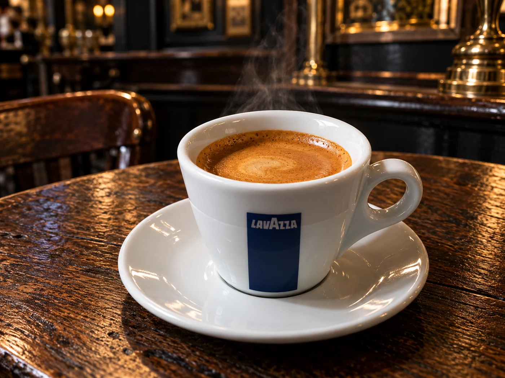
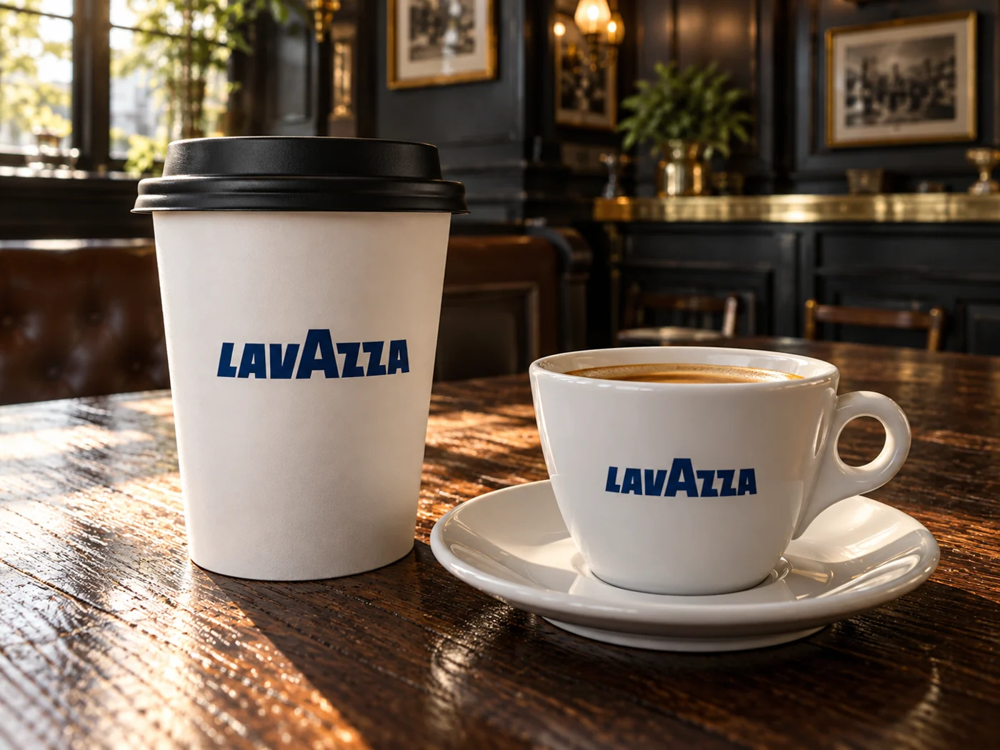

Pizza Madonna
pavlaka, sir, mozarela, pečenica, rukola, cherry paradajz
Od 700 RSD↗

Pica koju pamtite. Pivo koje volite. Društvo zbog kojeg ostajete. Dobro došli u Pub Old Palić.
Pizza igra · 31
Od 1986. ovde se dele priče, nazdravlja i vraća po još jedno parče. Naša tradicija živi u testu koje pripremamo po istom receptu decenijama, pažljivo odabranim sastojcima i toploj dobrodošlici.
Upoznajte našu priču↗pavlaka, sir, mozarela, pečenica, rukola, cherry paradajz

kečap, šunka, sir, luk, kobasica, slanina, jaje

kečap, šunka, sir, gljive, kukuruz, pavlaka
Točeni Jelen i Staropramen, pažljivo odabrana žestoka pića, vina i omiljeni aperitivi. Martini sa ledom i limunom ili Baileys za miran završetak večeri — izaberite svoj trenutak.
Istražite bar↗Pauza na Paliću zaslužuje dobru kafu. Uživajte u bogatoj aromi Lavazze kod nas ili ponesite svoju omiljenu kafu u šetnju.
Kafa i topli napici↗

Za rezervacije, porudžbine i informacije pozovite nas. Rezervacija je potvrđena tek u razgovoru sa osobljem.
Pub Old Palić stiže na vašu adresu u Subotici putem Wolta.
Poručite preko Wolta